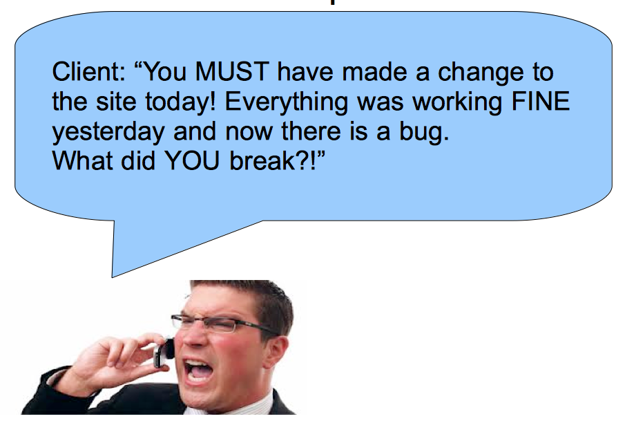

Git Source Control:
For the Rest of Us
Nolan Erck
South of Shasta Consulting
Obligatory “About Me” Stuff
- Owner, Chief Consultant at South of Shasta
- ColdFusion, C++, Java, jQuery, PHP, .NET, HTML5, Android, SQL, etc
- Manager, SacInteractive User Group
- Reformed Video Game Developer (Grim Fandango, SimPark, StarWars Rogue Squadron, etc)
- Music Junkie
Today's Agenda
- What is “source control”?
- When/why do I need it?
- How to use Git from a GUI.
- The difference in Git and GitHub.
- Next steps:
- branching, merging, reverting.
- Demos of how to do this.
- Other info.
- Questions.
Quick show of hands
(It's okay to raise your hand, I promise.)
- Who is brand new to source control?
- Who is NOT currently using any source control in your projects?
- Who uses .OLD or .BAK files as a way to “save your place” before making a change?
- Who makes ZIP files to backup the last version of your code?
Scenario 1
- You're about to make a change to your website.
- “I should save a copy of this somewhere before I break anything.”
- Windows Explorer
- AboutUs.html ---> AboutUs.BAK
- That's good, right?
Scenario 1 (cont)
- What about when you make a second change to AboutUs.html?
- Rename the file again
- AboutUs.HTML ---> AboutUs.OLD
- Fast-forward 6 months
- Which is the “most recent backup”, BAK or OLD?
- Can't remember, have to “diff” by hand. Boo.
But wait, it gets worse!
- Do you use FTP to update the site?
- And move /wwwroot up all at once?
- AboutUs.BAK and .OLD are in now in Production.
- Http://sitename/AboutUs.OLD Is a valid URL.
- Won't be processed by ColdFusion (or Ruby, PHP, etc)
- Original source code gets sent to the browser as plain text!
- Security issue!
Don't believe me? Here's proof.
Scenario 2
- George and I are splitting a project.
- I'm working in contact.html
- George emails me a copy of contact.html with changes of his own.
- Which lines changed? Did he change them before/after my edits?
- I have to manually “diff” the 2 files. Boo.
Ever had this phone call?

If only there was a way to prevent all of these situations from happening!
- There is.
- Source Control.
- It doesn't have to be Git. For today's talk we'll focus on Git with a GUI client.
- (Others: Subversion, CVS, Team Foundation Server, Visual SourceSafe, PerfForce, Mercurial.)
Questions? Comments?
- southofshasta.com
- nolan@southofshasta.com
- Twitter: @southofshasta
- Github: nolanerck
Thanks!